Subsections
Figure 3.1:
The porous solid: Eulerian and Lagrangian porosity.
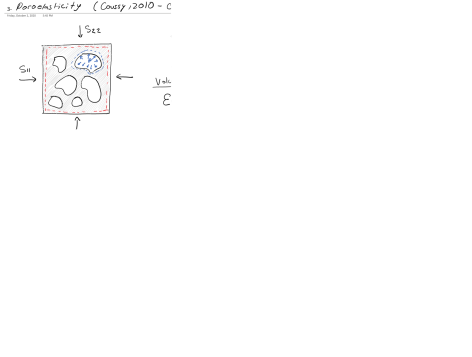 |
Figure 3.2:
Strain partition in the porous solid.
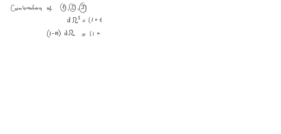 |
Figure 3.3:
Thought examples for matrix and porosity strain.
|
Figure 3.4:
Energy partition in the porous solid.
|
Figure 3.5:
Equations of poroelasticity.
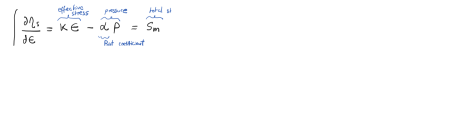 |
Figure 3.6:
The drained bulk (volumetric) modulus from jacketed loading.
|
Figure 3.7:
The solid skeleton modulus from unjacketed loading and the second poromechanical modulus.
|
Figure 3.8:
Method 1: Using Biot coefficient 'simplified' equation and  .
.
|
Figure 3.9:
Method 2: Measure unjacketed modulus.
|
Figure 3.10:
Method 3: Alternating confining and pore pressure loading.
|
Figure 3.11:
Poroelasticity, more than an effective stress equation.
|
Figure 3.12:
1D-strain pore pressure depletion.
|
Figure 3.13:
Local conditions and 1D-strain implications.
|
Figure 3.14:
Stress equations.
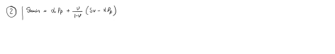 |
Figure 3.15:
1D-strain: total and effective stress paths.
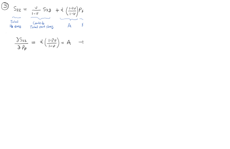 |
Figure 3.16:
1D-strain subsidence.
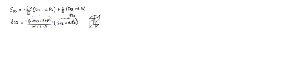 |
Figure 3.17:
MEM for VTI rock.
|
Figure 3.18:
Biot modulus.
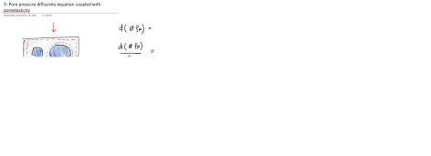 |
Figure 3.19:
Adding porosity changes and volumetric strain to the continuity equation.
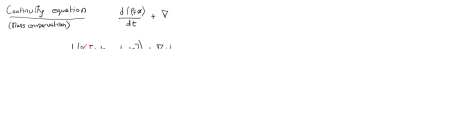 |
Figure 3.20:
Characterisitc pore pressure diffusion time.
|
Figure 3.21:
Examples 1, 2, 3.
|
Figure 3.22:
Examples 4, 5.
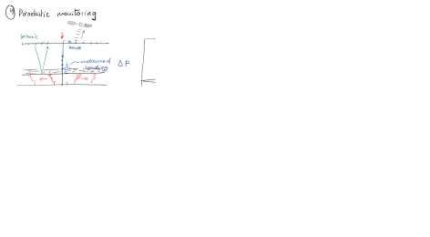 |
Figure 3.23:
Pore pressure change due to volumetric strain.
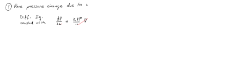 |
Figure 3.24:
Undrained bulk 'volumetric' modulus.
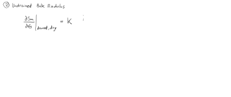 |
Figure 3.25:
Skempton's B parameter.
|
Figure 3.26:
Undrained bulk modulus, Biot modulus and Skempton's B parameter for a gas-water fluid mixture.
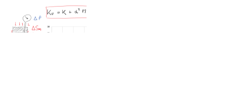 |
The file BiotCoeffExperiment.xlsx has data from a laboratory experiment on a reservoir sandstone that shows axial and radial deformations caused by alternating variations of confining stress  and pore pressure
and pore pressure  .
.
- a.
- Plot pressure and stresses as a function of time.
- b.
- What are the dPc/dt and dPp/dt loading rates when either confining or pore pressure are increased??
- c.
- Fit a straight line to the data to obtain a unique relationship between
 and
and
 (effective), and calculate the bulk Biot coefficient
(effective), and calculate the bulk Biot coefficient  . Assuming isotropic elasticity and that the Poisson Ratio is 0.25, what is the Young's modulus?
. Assuming isotropic elasticity and that the Poisson Ratio is 0.25, what is the Young's modulus?
- d.
- Plot together the volumetric strain with Terzaghi’s and Biot’s effective stresses.
- e.
- If permeability is k = 100 mD, the fluid is water, porosity is 0.28, and the sample length is 0.05 m with top and bottom drainage, what is the characteristic time for pore pressure diffusion
 ? How does it compare to the pressure/stress loading time? Would it be drained or undrained loading? Note: you need the diffusivity parameter for which you have to look up for properties of water.
? How does it compare to the pressure/stress loading time? Would it be drained or undrained loading? Note: you need the diffusivity parameter for which you have to look up for properties of water.
- f.
- EXTRA: Use the theory of transverse isotropic poro-elasticity to figure out the stress paths needed to measure directly and .
Figure 3.27:
Variation of volumetric strain with Terzaghi's effective stress.
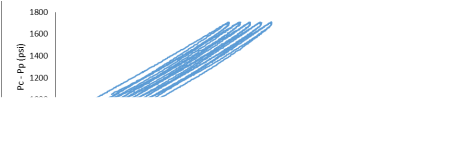 |
For this problem you have to use the geomechanical module of reservoir simulator CMG https://www.cmgl.ca/.
The software is available to UT Austin students here: http://pge.utexas.edu/LRC/
- a.
- Review the files CMG_Geomechanics_Tutorial.pdf and CMG_Running_InputFile.pdf.
- b.
- Change the vertical stress and well schedule as shown in the figure below (example files: Injection1.dat and Production1.dat.
Figure 3.28:
Schematic cross section of reservoir model for depletion.
|
- c.
- What is initial boundary condition in each direction? (i.e. constant stress or zero displacement).
- d.
- Plot 1 - Plot minimum principal total stress (Total stress I), vertical total stress (Total stress K), and pore pressure (Pressure) vs time. (**Note: Please remove initial data (time = 0) when you plot).
- e.
- Plot 2 - Plot minimum principal stress (y-axis) vs pore pressure (x-axis), and verify the slope of the curve is similar with
( is the Biot coefficient and
 is Poisson’s ratio - **Note: Please remove initial data (time = 0) when you plot pressure and stresses).
is Poisson’s ratio - **Note: Please remove initial data (time = 0) when you plot pressure and stresses).
- f.
- Run the simulation again using Biot coefficient from the previous laboratory problem, repeat the question “d” using the new simulation result and plot on the same figure.
- g.
- Plot the stress path with Mohr circles for the initial (0.1 days) and final time (100 days).
- h.
- Plot the stress path in the space for the same period of time.
- i.
- What is the absolute minimum pressure to create a hydraulic fracture (i.e. minimum principal total stress) at the end of the simulation when bottom-hole pressure is BHP = 240 psi? Compare with the analytical solution.
Figure 3.29:
Applications of thermoelasticity.
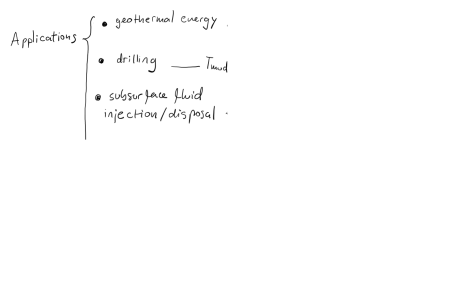 |
Figure 3.30:
Temperature-driven contration and dilation.
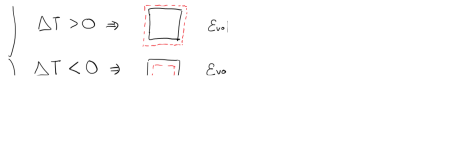 |
Figure 3.31:
Basic constitutive equation for thermoelasticity.
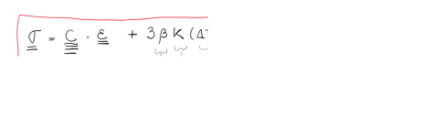 |
Figure 3.32:
Unconstrained dilation
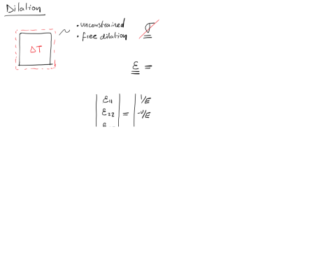 |
Figure 3.33:
Constrained “dilation” or thermal stress.
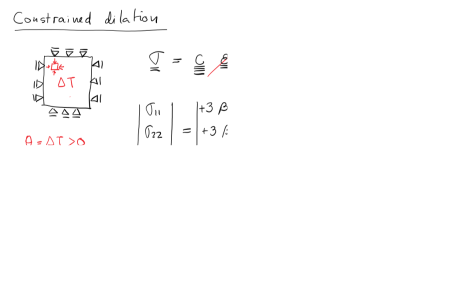 |
Figure 3.34:
Conditions for uni-axial strain thermoelastic stress path.
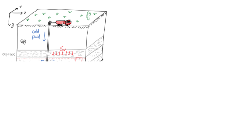 |
Constitutive equation:
Assuming uniform cooling leads to no horizontal strains:
 .
.
Furthermore, assuming a compliant caprock, no change of overburden, and small change in pore pressure leads to constant effective vertical stress
cst.
Let us use the matrix notation for the normal stresses (shear stresses are zero):
Solving for
 and
and
 results in:
results in:
Replacing
in the first equation leads to
which expressed in terms of the Young's modulus (
) is:
Hence, a variation of horizontal stress with temperature is
Which is in the order of
for
C,  GPa, and .
GPa, and .
Figure 3.35:
Derivation for uni-axial strain thermoelastic stress path.
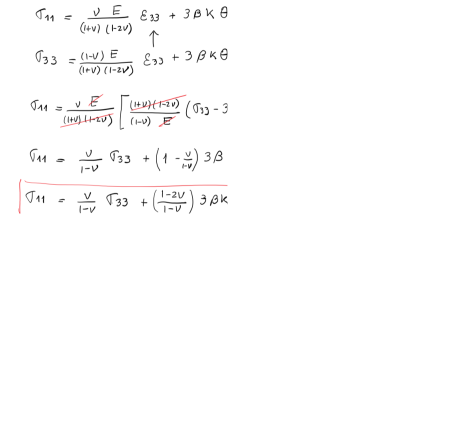 |
Figure 3.36:
Thermal stresses in wellbores.
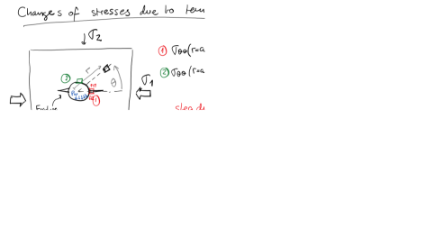 |
Theory thermo-Elasticity:
Figure 3.37:
Example of temperature cooling as a fucntion of time.
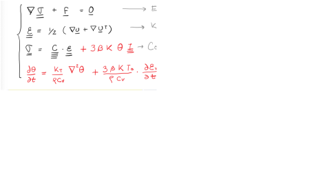 |
Theory thermo-poroelasticity (See Cheng's book):
where the coefficient of volumetric thermal expansion for variation in fluid content at constant frame volume is
where usually
. The drained volumetric thermal expansion coefficient is
| (for an ideal porous medium) |
(3.11) |
Drained thermoelastic effective stress coefficient (: Bulk modulus)
and the drained specific heat at constant strain divided reference temperature is
Figure 3.38:
General constitutive equation for chemo-mechanics.
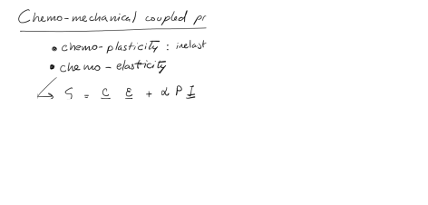 |
Figure 3.39:
Chemical sensitivity of shales.
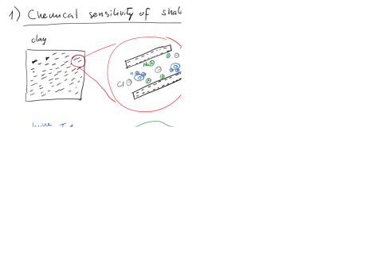 |
Figure 3.40:
Adsorption-induced deformation and adsorption stress.
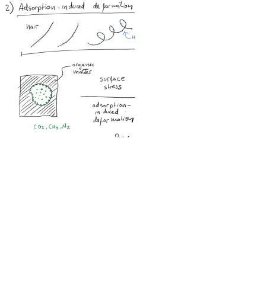 |
Figure 3.41:
Example of chemo-mechanics: coalbed methane.
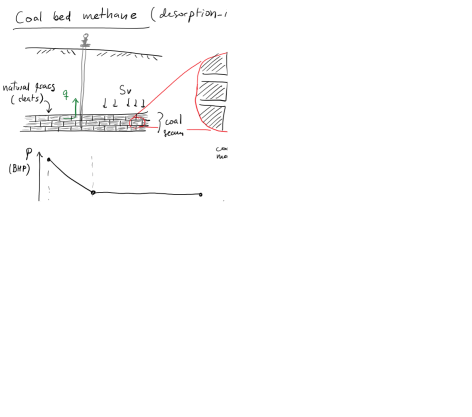 |
[Exercise to be based on https://doi.org/10.3390/en14165054]
![\includegraphics[scale=0.3]{.././Figures/CH3-07.PNG}](img137.svg)
![\includegraphics[scale=0.3]{.././Figures/CH3-03.PNG}](img133.svg)
![\includegraphics[scale=0.3]{.././Figures/CH3-04.PNG}](img134.svg)
![\includegraphics[scale=0.3]{.././Figures/CH3-06.PNG}](img136.svg)
![\includegraphics[scale=0.3]{.././Figures/CH3-08.PNG}](img138.svg)
![\includegraphics[scale=0.3]{.././Figures/CH3-09.PNG}](img139.svg)
![\includegraphics[scale=0.3]{.././Figures/CH3-11.PNG}](img141.svg)
![\includegraphics[scale=0.3]{.././Figures/CH3-12.PNG}](img142.svg)
![\includegraphics[scale=0.3]{.././Figures/CH3-13.PNG}](img143.svg)
![\includegraphics[scale=0.3]{.././Figures/CH3-17.PNG}](img147.svg)
![\includegraphics[scale=0.3]{.././Figures/CH3-20.PNG}](img150.svg)
![\includegraphics[scale=0.3]{.././Figures/CH3-21.PNG}](img151.svg)